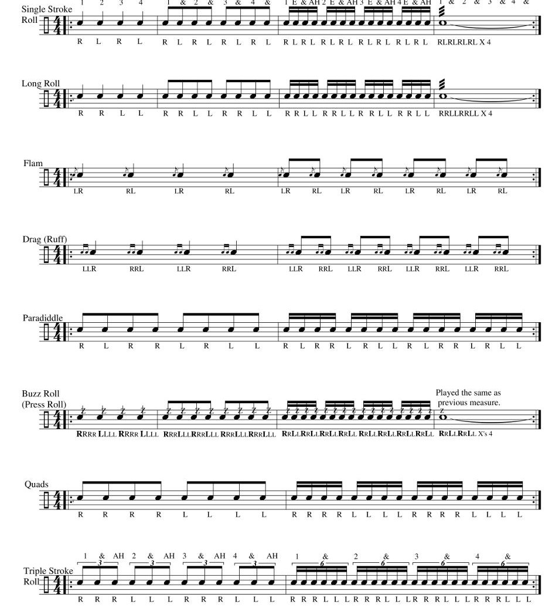

🎼 Rudiments of Music
Rudiments of music are the basic foundations and elements that guide how music is written, read, played, and understood. Just like you must learn the alphabet before reading or writing, you must first learn the rudiments before performing music well.

These rudiments include the staff, notes, clefs, key signatures, time signatures, rests, scales, intervals, dynamics, tempo, and more.
🎵 Main Elements of Rudiments of Music
-
The Staff The staff (or stave) is a set of five horizontal lines and four spaces used to write music. Notes are placed on the lines and spaces to show pitch.
Example: The first line from the bottom is E, then G, B, D, F going upward.
- Clefs Clefs are symbols placed at the beginning of the staff to show which pitch each line or space represents.
Example:
- Treble Clef (G clef) – used for high-pitched instruments like violin and flute.
- Bass Clef (F clef) – used for low-pitched instruments like bass guitar and tuba.
- Musical Notes Notes represent the duration (length) and pitch (height) of sounds in music.
Note Values (Western Notation):
- Semibreve (Whole Note) - 𝅝 = 4 beats
- Minim (Half Note) - 𝅗𝅥 = 2 beats
- Crotchet (Quarter Note) - 𝅘𝅥 = 1 beat
- Quaver (Eighth Note) - 𝅘𝅥𝅮 = ½ beat
- Semiquaver (Sixteenth Note) - 𝅘𝅥𝅯 = ¼ beat
- Demisemiquaver (32nd Note) - 𝅘𝅥𝅰 = ⅛ beat
- Rests Rests are symbols that show silence in music for a specific duration.
Examples:
- Semibreve rest – 4 beats of silence
- Crotchet rest – 1 beat of silence
- Note Values and Time SignaturesTime signatures show how many beats are in each bar of music and what type of note gets one beat.
Example:
- 2/4 = 2 beats per bar, crotchet gets one beat
- 4/4 = 4 beats per bar, common time
- Scales A scale is a series of notes arranged in order of pitch either ascending or descending.
Example: The C major scale is: C, D, E, F, G, A, B, C It has no sharps or flats.
- Intervals An interval is the distance between two notes.
Example: From C to E is a third (3rd), because it includes three letter names: C–D–E.
- Dynamics Dynamics show how loud or soft the music should be played.
Examples:
- p (piano) = soft.
- f (forte) = loud.
- mf (mezzo forte) = moderately loud.
- crescendo ( < ) = gradually louder.
- diminuendo ( > ) = gradually softer.
- Tempo Tempo is the speed at which music is played.
Examples:
- Largo = very slow.
- Allegro = fast.
- Moderato = moderate speed.
- Key Signatures Key signatures show which notes are sharp or flat in a piece of music and help you know the key of the music.
Example: The key of G major has one sharp (F♯).
- MUSICAL ALPHABETContains 7 letters: A B C D E F G.
Repeats in cycles (after G comes A again)
Why Rudiments of Music Are Important
- They help us read and write music correctly.
- They guide us in singing or playing instruments accurately.
- They form the language and grammar of music.
- They prepare students for harmony, composition, and performance.
types of musical staff
- Single Staff - A set of 5 horizontal lines and 4 spaces used for writing music notes, typically for one instrument or voice part.
- Grand Staff (Great Staff) - Two connected staves (treble clef on top, bass clef below) joined by a brace, used for piano and choral music.
- Percussion Staff - A 5-line staff with a neutral clef (𝄢) specifically designed for drum and percussion notation.
- Tablature Staff (TAB) - A special 6-line staff used for guitar and other stringed instruments, showing finger positions rather than musical pitches.
- Alto Clef Staff - Uses the C clef centered on the third line, primarily for viola music and some other instruments.
- Tenor Clef Staff - Uses the C clef centered on the fourth line, mainly for cello, bassoon, and trombone upper ranges.
the Major Scale of C
What is the C Major Scale?
The C major scale is the simplest and most natural scale in music. It consists of eight notes played in a particular order, starting and ending on C.
It is called the “natural scale” because it has no sharps (♯) or flats (♭).
Notes in the C Major Scale
The notes of the C major scale are:
C – D – E – F – G – A – B – C
- The first C is the starting note (also called the tonic or root).
- The second C (last note) is the octave (same note, but higher in pitch).
Structure of the Major Scale (Tone & Semitone Pattern)
All major scales follow this pattern:
Tone (T) – Tone (T) – Semitone (ST) – Tone (T) – Tone (T) – Tone (T) – Semitone (ST)
Applying to C Major Scale:
- C to D = Tone (T)
- D to E = Tone (T)
- E to F = Semitone (ST) (the only pair of white keys with no black key in between)
- F to G = Tone (T)
- G to A = Tone (T)
- A to B = Tone (T)
- B to C = Semitone (ST)
Playing the C Major Scale on the Piano/Recorder
- Start on Middle C (for piano).
- Move up using only white keys until the next C.
- On a recorder, the fingering is simple since it matches the natural notes.
Solfa Notation for C Major
The solfa syllables and their letter equivalents:
- Do = C
- Re = D
- Mi = E
- Fa = F
- So = G
- La = A
- Ti = B
- Do = C (higher octave)
Uses of the C Major Scale
- Singing practice and sight-singing.
- Playing instruments (keyboard, recorder, flute).
- Music composition
- Building chords and harmonies.
application of the C major scale
- Keyboard Practice – You can play the C major scale by pressing only the white keys from C to C on the piano.
- Sight Singing – Sing the notes as Do, Re, Mi, Fa, So, La, Ti, Do to help your voice match the pitch.
- Staff Notation – Practice writing and reading the C scale on the music lines to understand how notes are placed.
- Composing Tunes – You can make simple songs using the notes of the C major scale.
- Understanding Harmony – The C scale helps you to learn how notes are spaced and how to form chords.